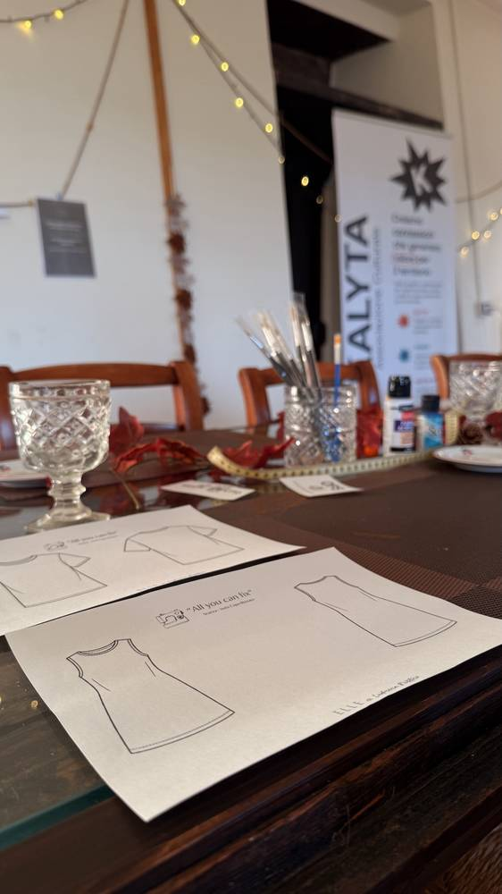
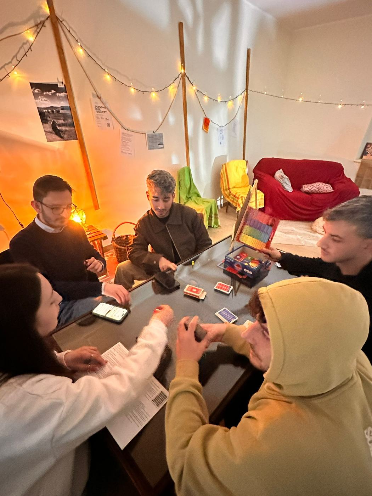
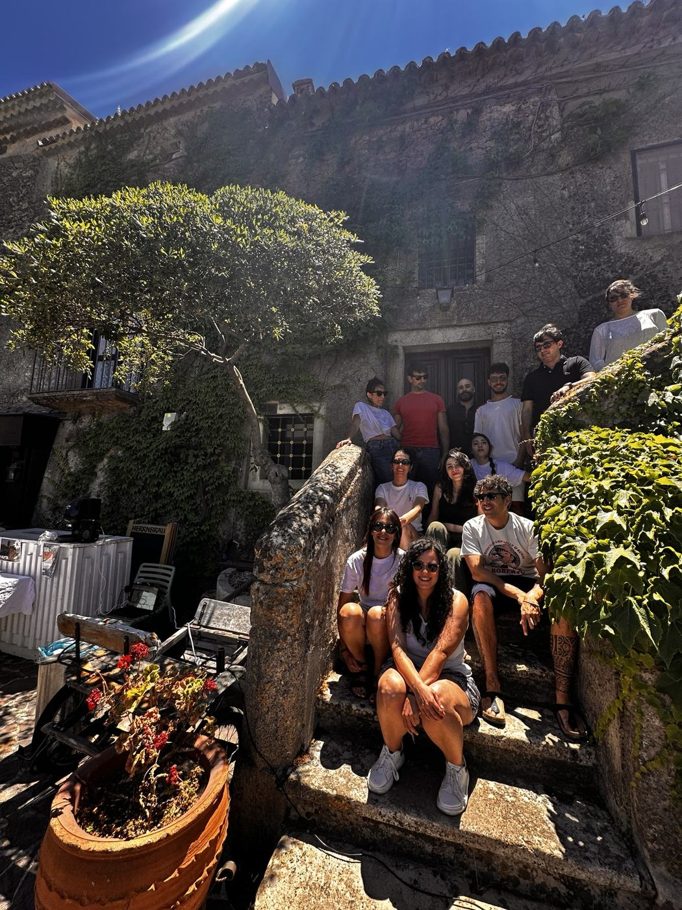
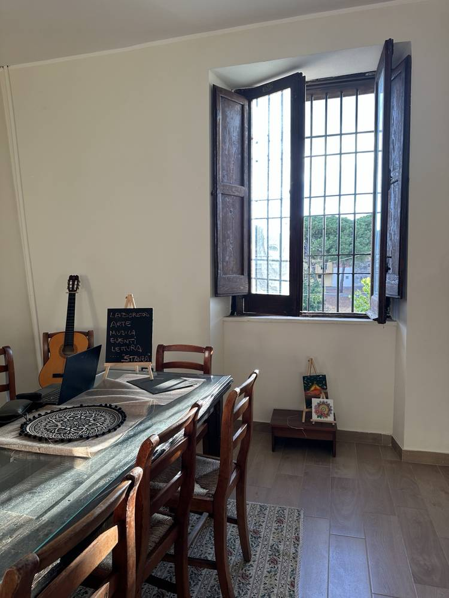

Vieni a un laboratorio
Scegli una data nel calendario e scrivici per iscriverti.
Calendario →KALYTA · ASSOCIAZIONE CULTURALE · ISOLA DI CAPO RIZZUTO
Laboratori creativi, incontri e uno spazio da vivere insieme. Si arriva, ci si siede al tavolo e si fa qualcosa con le mani, con le persone intorno.
Guarda il calendario ↓I LABORATORI
Pittura, cucito, candele e altre esperienze. Non serve saper fare: si parte dai materiali e si costruisce qualcosa, un pomeriggio alla volta.

Colori, tele e un tavolo condiviso. Non serve saper dipingere.
Stoffe, cartamodelli e un progetto semplice da portare a termine, anche partendo da zero.


Cere, profumi e forme. E nuove proposte che cambiano con le stagioni: le trovi nel calendario.
GLI INCONTRI

Non tutti gli incontri hanno bisogno di un programma. Alcuni nascono per stare insieme e conoscersi.



CALENDARIO
Scegli una data e premi Scopri e iscriviti: trovi descrizione, contributo e come partecipare.
LO SPAZIO
Lo spazio creativo e culturale di Kalyta a Isola di Capo Rizzuto. Un grande tavolo, luci, materiali e un posto dove fermarsi.



COME PARTECIPARE
Scegli una data nel calendario e scrivici per iscriverti.
Calendario →Costruiamo insieme una data dedicata, anche fuori calendario.
Kalyta Private →Hai un'idea, un'attività o un progetto per il territorio? Parliamone.
Scrivici →CONTATTI
Kalyta nasce a Isola di Capo Rizzuto per creare occasioni di incontro, cultura e creatività sul territorio.